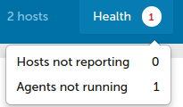
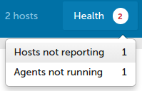

Enterprise report collection
What are reports?
Reports are the records that the components ( cf-agent, cf-monitord,
cf-serverd ... ) record about their knowledge of the system state. Each
component may log to various data sources within $(sys.statedir).
How does CFEngine Enterprise collect reports?
cf-hub makes connections from the hub to remote agents currently registered in
the lastseen database (viewable with cf-key -s)
on body hub control port (5308 by default). The hub
tries to collect from up to the LICENSED number of hosts for each collection
round as identified by hub_schedule as defined
in body hub control.
- See also:
hostsseen(),hostswithclass()
How often does cf-hub re-check the LICENSE
cf-hub re-checks the license when it is started and once every 5 minutes after
that.
Which hosts are being report-collected?
cf-hub gets a list of hosts to collect from lastseen database
(viewable with cf-key -s).
NOTE: this database is periodically cleaned from entries older than one week old.
This cleanup is tweakable using lastseenexpireafter setting.
However we don't recommend tweaking this setting, as older hosts are
practically dead, and may affect report collection performance (via
timeouts) and license-counting.
How does the license count affect report collection?
In each collection round, cf-hub will collect reports from up to
LICENSED number of hosts. It is unspecified which hosts are the ones
skipped, in case the total number of hosts listed in lastseen database
are over the LICENSED number.
Can cf-hub host count be different from Mission Portal ?
Yes, it can be.
Mission Portal only sees the hosts which cf-hub has put into the PostgreSQL database.
cf-hub can skip hosts for a few reasons, for example if they are in exclude_hosts, or if it has reached the license count.
Thus, it is possible to appear to be within license count in Mission Portal, but cf-hub is detecting that you are over license.
If you believe you should be within license count, the Host DELETE API can be used to remove old / inactive hosts.
When is a hub behaving as over-licensed ?
When the number of hosts in the lastseen database (viewable with
cf-key -s) is greater than the number of LICENSED hosts for this hub.
How are agents not running determined?
Hosts who's last agent execution status is "FAIL" will show up under "Agents not running". A hosts last agent execution status is set to "FAIL" when the hub notices that there are no promise results within 3x of the expected agent run interval. The agents average run interval is computed by a geometric average based on the 4 most recent agent executions.

You can inspect hosts last execution time, execution status (from the hubs perspective), and average run interval using the following SQL.
SELECT Hosts.HostName AS "Host name",
AgentStatus.LastAgentLocalExecutionTimeStamp AS "Last agent local execution
time", cast(AgentStatus.AgentExecutionInterval AS integer) AS "Agent execution
interval", AgentStatus.LastAgentExecutionStatus AS "Last agent execution status"
FROM AgentStatus INNER JOIN Hosts ON Hosts.HostKey = AgentStatus.HostKey
This can be queried over the API most easily by placing the query into a json
file. And then using the query API.
agent_execution_time_interval_status.query.json:
{
"query": "SELECT Hosts.HostName, AgentStatus.LastAgentLocalExecutionTimeStamp, cast(AgentStatus.AgentExecutionInterval AS integer), AgentStatus.LastAgentExecutionStatus FROM AgentStatus INNER JOIN Hosts ON Hosts.HostKey = AgentStatus.HostKey"
}
$ curl -s -u admin:admin http://hub/api/query -X POST -d @agent_execution_time_interval_status.query.json | jq ".data[0].rows"
[
[
"hub",
"2016-07-25 16:53:23+00",
"296",
"OK"
],
[
"host001",
"2016-07-25 16:06:50+00",
"305",
"FAIL"
]
]
See also: Enterprise API Reference, Enterprise API Examples
How are hosts not reporting determined?
Hosts that have not been collected from within blueHostHorizon seconds will
show up under "Hosts not reporting".

blueHostHorizon defaults to 900 seconds (15 minutes). You can inspect the
current value of blueHostHorizon from Mission Portal or via the API:
$ curl -s -u admin:admin http://hub/api/settings/ | jq ".data[0].blueHostHorizon"
900
Note: It's called "blueHostHorizon" because older versions of Mission Portal would turn these hosts to a blue color as an indication of "hypoxia" (lack of oxygen, where oxygen is access to latest policy) to indicate a health issue.
See also: Enterprise API Reference, Enterprise API Examples, Enterprise Settings
Which hosts are pending trust revocation?
When a host is removed using the delete API its key is placed in a queue for
trust revocation. To see which hosts are pending key removal use the following
query against the cfsettings database.
SELECT HostKey FROM KeysPendingForDeletion;
How to troubleshoot report collection?
The following steps can be used to help diagnose and potentially restore reporting for hosts experiencing issues.
Perform manual delta collection for a single host
Performing back to back delta collections and comparing the data received can help to expose so called patching issues. If the same amount of data is collected twice a rebase may resolve it.
[root@hub ~]# cf-hub -q delta -H 192.168.56.2 -v
verbose: ----------------------------------------------------------------
verbose: Initialization preamble
verbose: ----------------------------------------------------------------
# <snipped for brevity>
verbose: Connecting to host 192.168.56.2, port 5308 as address 192.168.56.2
verbose: Waiting to connect...
verbose: Setting socket timeout to 10 seconds.
verbose: Connected to host 192.168.56.2 address 192.168.56.2 port 5308 (socket descriptor 4)
verbose: TLS version negotiated: TLSv1.2; Cipher: AES256-GCM-SHA384,TLSv1/SSLv3
verbose: TLS session established, checking trust...
verbose: Received public key compares equal to the one we have stored
verbose: Server is TRUSTED, received key 'SHA=e77d408e9802e2c549417d5e3379c43050d2ad5928a198855dbb7e9c8af9a6f1' MATCHES stored one.
verbose: Key digest for address '192.168.56.2' is SHA=e77d408e9802e2c549417d5e3379c43050d2ad5928a198855dbb7e9c8af9a6f1
verbose: Will request from host 192.168.56.2 (digest = SHA=e77d408e9802e2c549417d5e3379c43050d2ad5928a198855dbb7e9c8af9a6f1) data later than timestamp 1481901790
verbose: Successfully opened extension plugin 'cfengine-report-collect.so' from '/var/cfengine/lib/cfengine-report-collect.so'
verbose: Successfully loaded extension plugin 'cfengine-report-collect.so'
verbose: Sending query at Fri Dec 16 15:24:23 2016
verbose: h>s QUERY delta 1481901790 1481901863
verbose: Sending query at Fri Dec 16 15:24:23 2016
verbose: Received reply of 5050 bytes at Fri Dec 16 15:24:23 2016 -> Xfer time 0 seconds (processing time 0 seconds)
verbose: Processing report: MOM (items: 44)
verbose: Processing report: MOY (items: 48)
verbose: Processing report: MOH (items: 22)
verbose: Processing report: EXS (items: 1)
verbose: Received 5 kb of report data with 115 individual items
verbose: Connection to 192.168.56.2 is closed
Perform manual rebase collection for a single host
A rebase causes the hub to throw away all reports since the last collection
and collect only the output from the most recent run.
[root@hub ~]# cf-hub -q rebase -H 192.168.56.2 -v
verbose: ----------------------------------------------------------------
verbose: Initialization preamble
verbose: ----------------------------------------------------------------
# <snipped for brevity>
verbose: Connecting to host 192.168.56.2, port 5308 as address 192.168.56.2
verbose: Waiting to connect...
verbose: Setting socket timeout to 10 seconds.
verbose: Connected to host 192.168.56.2 address 192.168.56.2 port 5308 (socket descriptor 4)
verbose: TLS version negotiated: TLSv1.2; Cipher: AES256-GCM-SHA384,TLSv1/SSLv3
verbose: TLS session established, checking trust...
verbose: Received public key compares equal to the one we have stored
verbose: Server is TRUSTED, received key 'SHA=e77d408e9802e2c549417d5e3379c43050d2ad5928a198855dbb7e9c8af9a6f1' MATCHES stored one.
verbose: Key digest for address '192.168.56.2' is SHA=e77d408e9802e2c549417d5e3379c43050d2ad5928a198855dbb7e9c8af9a6f1
verbose: Successfully opened extension plugin 'cfengine-report-collect.so' from '/var/cfengine/lib/cfengine-report-collect.so'
verbose: Successfully loaded extension plugin 'cfengine-report-collect.so'
verbose: Sending query at Fri Dec 16 15:35:10 2016
verbose: h>s QUERY rebase 0 1481902510
verbose: Sending query at Fri Dec 16 15:35:10 2016
verbose: Received reply of 128157 bytes at Fri Dec 16 15:35:10 2016 -> Xfer time 0 seconds (processing time 0 seconds)
verbose: Processing report: CLD (items: 46)
verbose: Processing report: VAD (items: 52)
verbose: Processing report: LSD (items: 13)
verbose: Processing report: SDI (items: 327)
verbose: Processing report: SPD (items: 143)
verbose: Processing report: ELD (items: 205)
verbose: ts #0 > 1481902510
verbose: Received 125 kb of report data with 786 individual items
verbose: Connection to 192.168.56.2 is closed
Note: The Enterprise hub automatically schedules rebase queries if it has
been unable to collect from a given candidate for client_history_timeout
hours.
Enable report dumping for the affected client
Enable report dumping by creating enable_report_dumps in WORKDIR (/var/cfengine/enable_report_dumps). When the file is present, cf-serverd will log reports provided to cf-hub to WORKDIR/diagnostics/report_dump (/var/cfengine/diagnostics/report_dumps). These diagnostics should be provided to support.